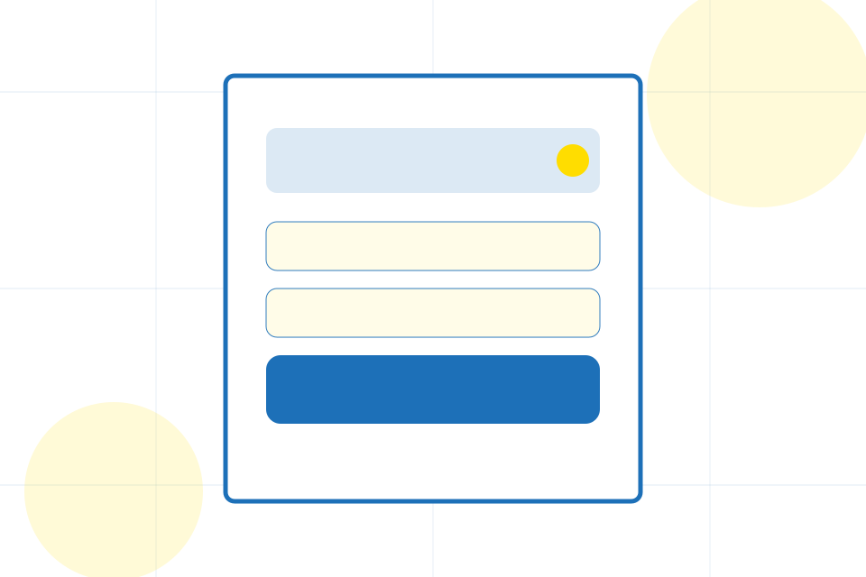
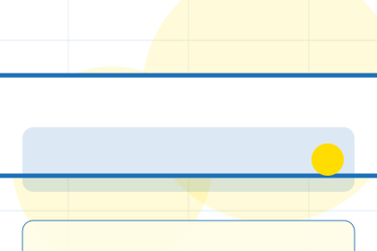
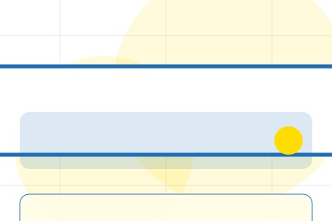
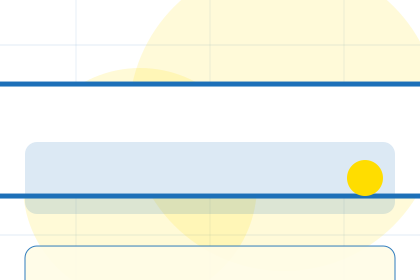
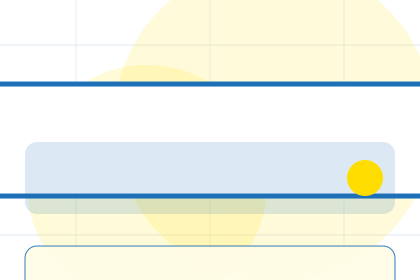
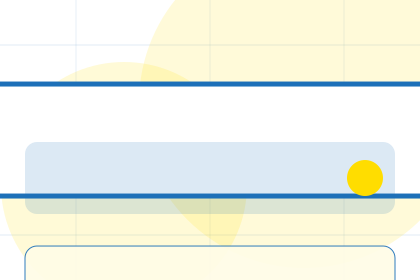
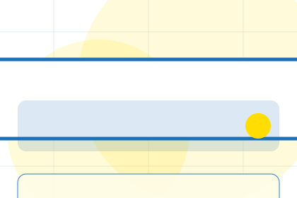
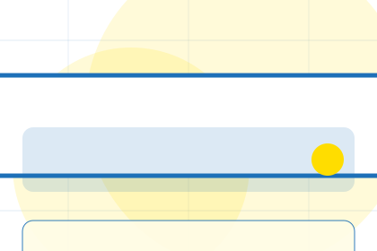
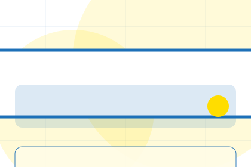
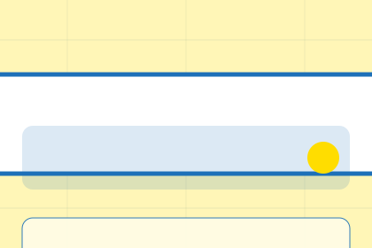

Best Fit
Who should use complaints and when it belongs in the support journey.
Support / 01
Support opens as a clear government decision hub: what Forum offers, who it helps, why it matters, and which route to take first.
The first screen combines positioning, proof, primary action, and fast internal navigation, so people can act immediately or compare the rest of the support route with context.
Plain service hero
Select the closest route and Forum keeps the next step, proof, and follow-up expectation aligned with public service access.

Support / 02
Issues explains the practical scope, best-fit situations, and expected outcome so government visitors can compare options without decoding jargon.
The section keeps the offer concrete: what is included, who it is best for, what decision it supports, and which linked route gives the deeper detail.
Explore SupportWho should use issues and when it belongs in the support journey.
The practical benefit visitors should expect after choosing this route.
Where to compare details, pricing, support, or contact options before committing.
Support / 03
Complaints explains the practical scope, best-fit situations, and expected outcome so government visitors can compare options without decoding jargon.
The section keeps the offer concrete: what is included, who it is best for, what decision it supports, and which linked route gives the deeper detail.
Explore Support

Who should use complaints and when it belongs in the support journey.
Support / 04
Requests explains the practical scope, best-fit situations, and expected outcome so government visitors can compare options without decoding jargon.
The section keeps the offer concrete: what is included, who it is best for, what decision it supports, and which linked route gives the deeper detail.
Explore SupportWho should use requests and when it belongs in the support journey.

The practical benefit visitors should expect after choosing this route.

Where to compare details, pricing, support, or contact options before committing.
Support / 05
Escalation explains the practical scope, best-fit situations, and expected outcome so government visitors can compare options without decoding jargon.
The section keeps the offer concrete: what is included, who it is best for, what decision it supports, and which linked route gives the deeper detail.
Explore SupportWho should use escalation and when it belongs in the support journey.
The practical benefit visitors should expect after choosing this route.

Where to compare details, pricing, support, or contact options before committing.
Support / 06
Help explains the practical scope, best-fit situations, and expected outcome so government visitors can compare options without decoding jargon.
The section keeps the offer concrete: what is included, who it is best for, what decision it supports, and which linked route gives the deeper detail.
Open ContactWho should use help and when it belongs in the support journey.
The practical benefit visitors should expect after choosing this route.
Where to compare details, pricing, support, or contact options before committing.
Support / 07
Response explains the practical scope, best-fit situations, and expected outcome so government visitors can compare options without decoding jargon.
The section keeps the offer concrete: what is included, who it is best for, what decision it supports, and which linked route gives the deeper detail.
Explore SupportWho should use response and when it belongs in the support journey.
The practical benefit visitors should expect after choosing this route.
Where to compare details, pricing, support, or contact options before committing.
Support / 08
Contact explains the practical scope, best-fit situations, and expected outcome so government visitors can compare options without decoding jargon.
The section keeps the offer concrete: what is included, who it is best for, what decision it supports, and which linked route gives the deeper detail.
Explore SupportForum structures contact around best fit, what changes, and a clear next route so visitors can compare the block quickly before they start a request.
Start RequestPlain service hero
Select the closest route and Forum keeps the next step, proof, and follow-up expectation aligned with public service access.
Support / 09
Resolve explains the practical scope, best-fit situations, and expected outcome so government visitors can compare options without decoding jargon.
The section keeps the offer concrete: what is included, who it is best for, what decision it supports, and which linked route gives the deeper detail.
Explore Support
Who should use resolve and when it belongs in the support journey.

The practical benefit visitors should expect after choosing this route.

Where to compare details, pricing, support, or contact options before committing.
Support / 10
Forum closes the support route with a clear action, a quick reminder of the value, and a low-friction way to start a request.
Visitors who are ready can use the primary action. Visitors who are still comparing can scan the section links, proof, and support routes before they start a request.
Start RequestThe final block keeps the choice simple: act now, compare one more proof route, or send enough detail for a focused response.
Start Requestpublic service access
A civic service site with task-first pages, blue start buttons, form patterns, and accessibility-first structure. Support ends with a direct path to start a request, plus enough context for visitors who still need to compare.

Start RequestPublic service content must be verified by the responsible authority before publication.